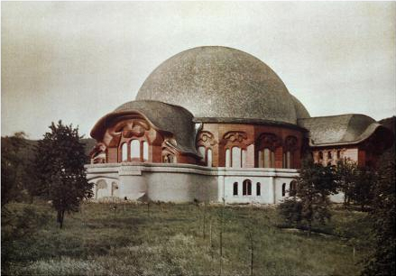

Esoteric Lessons for the First Class
of the Free School for Spiritual Science

by Rudolf Steiner
Volume Three, Lesson Three (Recapitulation)
From stenographic notes not revised by the speaker
Dornach, September 11, 1924
My dear sisters and brothers,
It is not possible to again give the introduction concerning the obligations for the newly participating members of the Class. I therefore request that the members who give the new ones the [mantric] verses also inform them of the conditions involved, which I will describe at the end of this lesson.
My dear sisters and brothers, we will again begin by letting our souls hear the words that human beings – if they have ears to hear them – can hear from all the Beings of the surrounding world, which they could hear in the past, can hear in the present and will hear in the future, which allow them to envision the need for self-knowledge – that constantly comes to them from the entire universe – which is the true bridge to what the human being needs for his thinking, for his willing, for his working in the world if he wishes to be human in the true sense of the word.
O man, know thyself!
So resounds the Cosmic-Word.
You hear it strong in soul,
You feel it firm in spirit.
Who speaks with such cosmic might?
Who speaks with such depth of heart?
Does it work through distant radiant space
Into your senses' sense of being?
Does it ring through weaving waves of time
Into your life's evolving stream?
It's you yourself who,
In feeling space, in experiencing time,
Create the Word, feeling foreign
In the soulless void of space
Because you lose the force of thought
In time's destructive flow.
My dear sisters and brothers, the description of the path to knowledge has led us to the Guardian of the Threshold. Once the Guardian of the Threshold, at the edge of the abyss of being, has shown us how the forces of our inner humanity – willing, feeling, thinking – appear to the eyes of the Beings of the spiritual world; after the Guardian has shown us how in the present time´s consciousness we have not awakened to our full humanity in respect to these forces if they are inwardly observed, but that these forces appear to the divine-spiritual powers as the three beasts, which are shown to us by the Guardian of the Threshold; after the Guardian of the Threshold has placed this shattering view before our souls, he shows us the path forward, which leads to ennoblement in self-knowledge, and which must be followed if the exhortation “O man, know thyself” is to be realized.
After he first showed us how we should stand in respect to our thinking, feeling and willing, he shows us – in the mantric verses which were cited at the end of the previous lesson in this Michael-School – how we are first to delve down into our thinking, but that this thinking is of a seeming nature [Scheineswesen] that cannot bear our true Self; but how we are then interwoven out in the cosmic ether and are at least able to revere those guiding beings [1] who lead us from earth-life to earth-life.
Then he shows us how we can delve down into feeling, how in feeling being and seeming are united, how there our being – selfhood in the good sense – arises with half its strength; how, however, we should understand that not only what is perishable and seeming in our being arises, but also the life-forces of the world, of the cosmos.
Only when we descend into the will do we feel being streaming into our selfhood. Seeming transforms itself into being. It descends into the will, and we feel the cosmic creating powers streaming through our will.
These were the Guardian of the Threshold's words at the edge of the abyss of being – where the yawning darkness, the night-cloaked darkness is still before us, which is to become light in order that we find the light that can illuminate our actual self. Behind us is the glowing, sunlit physical reality, which only becomes dark because we cannot find our actual being in it. There the Guardian of the Threshold says these mantric words:
See in yourself the weaving thoughts:
Seeming world is what you see,
Selfhood's being hides in you;
Delve down beneath the seeming:
Etheric essence flows in you;
Selfhood's being should revere the
Guiding Beings of your spirit.
Perceive within the flow of feeling:
Within you mingle seeming and being,
Your selfhood tends towards the seeming;
So plunge into your seeming being:
In you exist the cosmic-psychic forces;
Your selfhood then should understand
Your own soul's living powers.
Let strive with thrust of will
Which rises out of all the seeming,
With creative actual Self it rises;
Your life in full should turn to it:
It is filled with cosmic-spirit-force;
Your inner Self should truly grasp
Creative cosmic force in the spirit-I.
[The mantra is written on the blackboard.]
The Guardian speaks:
See in yourself the weaving thoughts:
Seeming world is what you see,
Selfhood's being hides in you;
Delve down beneath the seeming:
Etheric essence flows in you;
Selfhood's being should revere the
Guiding Beings of your spirit.
Perceive within the flow of feeling:
Within you mingle seeming and being,
Your selfhood tends towards the seeming;
So plunge into your seeming being:
In you exist the cosmic-psychic forces;
Your selfhood then should understand
Your own soul's living powers.
Let strive within the thrust of will
Rising out of all the seeming
With creative actual self it rises;
Your life in full should turn to it:
It's filled with cosmic-spirit-force;
Your inner self should truly grasp
Creative cosmic force in the spirit-I.
The Guardian of the Threshold has spoken a mantric verse to us, of which we should not only receive its content, but rather with our whole feeling we should enter into the weave and life of the spiritual world. Therefore this mantric verse is shaped so that in its rhythm it appears as having moved downward from the spiritual world. Each line begins with a stressed syllable, followed by an unstressed syllable. So we have in the first verse:
[While speaking the trochaic rhythm symbols (– ᴗ) are placed above the first syllables of each line and then spoken with the appropriate stress]
See in yourself the weaving thoughts:
Seeming world is what you see,
Selfhood's being hides in you;
Delve down beneath the seeming:
Etheric essence flows in you;
Selfhood's being should revere the
Guiding Beings of your spirit.
This coming down by the spiritual world to us is to be felt in the trochaic rhythm. Only then do we receive this verse correctly in our souls. Only when this speaking down to us by the spiritual world is with this intonation do we receive this verse in our souls correctly, feeling it deeply within us:
See in yourself the weaving thoughts:
Seeming world is what you see,
Selfhood's being hides in you;
Delve down beneath the seeming:
Etheric essence flows in you;
Selfhood's being should revere the
Guiding Beings of your spirit.
The next verse is the opposite: Now we should rise with our feeling to being. Here [the first syllable] we are below: here [the second syllable] we strive upward to being: The unstressed [low] tone is before the stressed [high] tone:
[while speaking, the iambic rhythm symbols (ᴗ –) are placed over the first two syllables of each line, and it is spoken with the corresponding intonation:]
Perceive within the flow of feeling:
Within you mingle seeming and being,
Your selfhood tends towards the seeming;
So plunge into your seeming being:
In you exist the cosmic-psychic forces;
Your selfhood then should understand
Your own soul's living powers.
We must live in these words, which are mantrically united in this rhythm:
Perceive within the flow of feeling:
Within you mingle seeming and being,
Your selfhood tends towards the seeming;
So plunge into your seeming being:
In you exist the cosmic-psychic forces;
Your selfhood then should understand
Your own soul's living powers .
That we have entered in reality is expressed in that we first “revere”, which is an inner soul function; in that we then “understand”, where we gradually come alongside the process; in that we first arrive at the “guiding Beings”, who are to guide us; then the “living powers”, which weave and live through life. In one mantric verse all is in the right place and all is integrated in the organism of the whole.
The third verse tells us how we perceive being directly in the will. We stand alongside being. Two high-toned syllables begin:
[While speaking the spondaic symbols (– –) are placed over the first two syllables of each line on the blackboard and the lines are spoken with the corresponding emphasis:
Let strive within the thrust of will
Rising out of all the sham
With creative actual self it rises;
Your life in full should turn to it:
It's filled with cosmic-spirit-force;
Your inner self should truly grasp
Creative cosmic force in the spirit-I.
We have now come farther. It is no longer “understand”; It is “grasp”, which is an action. The “Creative cosmic force” instead of “living powers” is placed at the beginning of the line to indicate the complete reversal we make when rising from “sham” to “being”.
The beginning of each line of the third verse is therefore to be felt in its spondaic rhythm. Here we have trochaic [“trochaic” is written alongside the first verse]; here iambic [“iambic” is written alongside the second verse]; here spondaic [“spondaic” is written alongside the third verse].
Let strive within the thrust of will
Which rises out of all the seeming
With creative actual self it rises;
Your life in full should turn to it:
It's filled with cosmic-spirit-force;
Your inner self should truly grasp
Creative cosmic force in the spirit-I.
After the Guardian of the Threshold has presented this to ours souls, he makes us aware of how we should integrate ourselves into the cosmos, into the world with all its forces if we want to advance in spiritual knowledge. For what is within us is at first not distinguishable according to its place, whereas in the cosmos it is ordered. In the cosmos we can indicate the definite place. Within us everything is interwoven. But we do not achieve real knowledge if we do not rise up to the cosmic forces and the cosmic powers – if we remain subjective in ourselves, remaining in our own skin, if we do not go out of ourselves and let our body become the whole world. Then will our soul, our narrow humanity, feel itself to be a member of the cosmos. The spirit will integrate our narrow humanity into the whole cosmos, into the whole world.
We must carry this out, as the Guardian of the Threshold indicates when he shows us how from the depths of the earth, which draws all the beings by gravity, forces arise which also draw us down, which bind our will to the earth if we don't make ourselves free by inner striving. Our gaze goes earthward if we want to localize our will. We must feel ourselves one with the earth's gravity, feel drawn by the earth and make the effort to free ourselves from the earth's gravity if we want to let our will to be one with the cosmos.
Feel how the depths of earth
Thrust their forces on your being,
On the members of your body.
You will lose yourself in them
If your willing trusts itself
Powerlessly to their striving ;
They would darken in you the I.
Thus speaks the Guardian of the Threshold to our willing on behalf of Michael at the yawning abyss of being.
And in wanting to integrate our feeling into the cosmos, he does not direct us to the depths, but to the horizontal reaches of the world, where the forces swing from west to east, from east to west, permeating us. These are the same forces that grasp our feeling. We must feel the divine godly powers, who send their spiritual light in these pulsing waves from the horizontal directions if we wish to integrate our feeling into the cosmic distance. In order to integrate our willing into the vertical, feel it bound below and freed above, we must be able to send our feeling into the cosmic distance. Then there will be light in our feeling. Then something goes through our feeling which also goes through us, just as the sun illuminates the earth's air when it moves from east to west.
However, in all that streams through us we must be loving. The force of love alone, which lives and courses through humanity, can accomplish what is asked of us. Then wisdom will course through us, and we will feel ourselves to be in the wide circles in which the sun moves, as feeling humanity, as Self, strong for true, good spiritual creativity.
In respect to feeling, the Guardian of the Threshold, at the yawning abyss of being, says this to us as feeling human beings:
Feel how from the cosmic distance
Godly powers their spiritual light
Let illuminate your psychic being.
Be yourself loving in them, and
They'll create, wisdom-weaving,
You as Self within their circles,
Strong for the good, spirit creating.
And when the Guardian of the Threshold wants to speak to our thinking so that it integrates itself in the cosmos, he doesn't direct us down to the will, which should rise upward; he doesn't direct us to feeling in the wide circle in which the sun moves, but he indicates the heights, the heavenly heights where alone the self can live selflessly if it wants to receive the powers of thought in what comes with grace from above, if it wants to follow a higher striving. We stand below, the Word is above. We must be innerly courageous to hear the Word, for only if we courageously strive for wisdom and knowledge does the cosmic Word resound from above, full of grace, speaking about humanity's true wisdom.
Again the Guardian of the Threshold speaks to us at the yawning abyss of being:
Feel how in heavenly heights
Selfhood can selflessly live,
When it wants, striving to follow,
Spirit-filled, powers of thought,
And courageously hear the Word
That resounds with grace from above
Into the true being of man.
[The mantra is written on the blackboard.]
The Guardian instructs us on Willing, Feeling, Thinking:
Feel how the depths of earth
Thrust their forces on your being,
On the members of your body.
You will lose yourself in them
If your willing trusts itself
Powerlessly to their striving;
They would darken in you the I.
Feel how from the cosmic distance
Godly powers their spiritual light
Let illuminate your psychic being.
Be yourself loving in them,
And they'll create, wisdom-weaving,
You as Self within their circles,
Strong for the good, spirit creatin
g.
Feel how in heavenly heights
Selfhood can selflessly live,
When it wants, striving, to follow,
Spirit filled, powers of thought,
And courageously hear the Word
That resounds with grace from above
Into the true being of man.
We must look above if our thinking wants to unite itself with the forces of the cosmos. The realm of cosmic circling distance is where we must feel ourselves to be if our feeling wants to unite itself with the cosmic forces. Below is the place where we must look to insert our earthbound willing, which we should make free above, into the cosmic realms. Everywhere – above, in the distance and below – everywhere is special Being. We must feel it. The Guardian of the Threshold, on behalf of Michael, points us there and he tells us what we’ll find above, in the middle and below.
He instructs us further about the heights, the middle and below, because he wants to instruct us about thinking, feeling and willing. This is what he says:
The light does battle with gloomy powers
In that realm, where your thinking
In spirit-being longs to enter.
You find, striving lightward,
Your Self, taken from you by spirit;
You can, if darkness entices you,
The Self in matter lose.
We are placed between light and darkness. Light wants our Self, darkness wants our Self. We are to find the path between light and darkness to come to the Self. That is what lies in the Guardian of the Threshold's admonition.
The Guardian speaks to our feeling:
The warmth does battle with the cold
In that realm, where your feeling would
In spirit-interweaving live.
You find, loving warmth, your Self
In spirit-longing blown away;
You can, if cold does harden you,
The Self in sorrow grind to dust.
Again we are standing between polar opposites with our feeling: between the loving warmth, between warm love and cold hardness, the hardening cold. We must find the path between them if our Self would find itself.
And about the third realm, where the will originates, the Guardian of the Threshold admonishes us:
Thus life does battle with death
In that realm, where your will
Would act with spiritual creation.
You find, holding on to life,
Your Self vanishing in spirit's power;
If death's power binds you fast,
You can your Self constrict to nothing.
Life and death: We can lose our will to life, we can lose it to death; in life feel it vanish, in death feel it constricted.
We must seek for the path. The Guardian urges us to do so. It will be the subject we begin with in the next lesson.
The Guardian once more points out how we must seek the path to arrive at our human Self. He speaks with earnest words, for it is not easy to find the inner strength that holds and carries and leads the Self to find what it does not have in normal earthly life. We will see later how the Guardian gives us the means to do so.
Next Saturday, when this mantric verse will be written on the blackboard, we will hear the Guardian further as he gradually points out the ways we can go astray – which we must know about in order to find the right path.
*
But now we must again consider, looking back at earthly life – which we must do every time we enter the esoteric – so now let us again consider the admonition which was spoken to humankind in the past by all the Beings and events, which speaks to humankind in the present and which will speak to humankind in the future:
O man, know thyself!
So resounds the Cosmic-Word.
You hear it strong in soul,
You feel it firm in spirit.
Who speaks with such cosmic might?
Who speaks with such depth of heart?
Does it work through distant radiant space
Into your senses' sense of being?
Does it ring through weaving waves of time
Into your life's evolving stream?
It's you yourself who,
In feeling space, in experiencing time,
Create the Word, feeling foreign
In the soulless void of space
Because you lose the force of thought
In time's destructive flow.
When all that streams through this Michael-School from the Guardian on Michael's behalf, when here the instruction in the rightfully existent Michael-School penetrates our soul, then we may be sure, if we are honest and open minded, that Michael's strength will stream through this room, which may be indicated by Michael's sign:
and by the seal-gestures, through which Michael lets the RoseCross stream enter the RoseCross temple, the strength which humanity needs today for its esoteric life, which here acts from the threefold source of the cosmos – from the divine Father-principle, from the Christ-principle, from the principle of the Spirit, so that the RoseCross verse is united with the Michael-Gesture-seal:
Ex deo nascimur
In Christo morimur
Per spiritum sanctum reviviscimus
which must be felt so that the gestures are understood as:
I revere the Father
[ lower seal-gesture ]
I love the son
[ middle seal-gesture ]
I unite with the spirit
[ upper seal-gesture ]
Once more:
[ Michael-Sign-Gesture ]
[together with the seal-gestures is spoken:]
Ex deo nascimur
In Christo morimur
Per spiritum sanctum reviviscimus
The mantric verses which are given in this School may only be possessed by those who are members of this School. In the case of someone who is a member of the School and is not present during a lesson, so does not have the verses, he can obtain them from another member who has them. For this it is necessary to request permission from Dr. [Ita] Wegman or from me. So when someone wants to receive the verses because he was not able to have them here, it is necessary to ask either Dr. Wegman or me. But not the one who wants them is to ask, but the one who gives them. This must be said as a foregone conclusion.
This is not some administrative measure, but in every case where the verses are passed on this must be observed, because it is the start of the occult act through which the verses are received.
Those members who have recently joined may only receive the verses up to the lesson in which they have participated. Only in special cases, which must be judged individually, may the request be made for the later verses to be given. By mail – that is, by a means other than verbally – the verses may not be passed on from one to another.
If anyone should write down anything else but the verses, he is obliged to only keep what he has written for a week, and then burn it. What is communicated here in the rightfully existing Michael School only has importance through verbal communication – this is an inner occult law –, with the exception of the mantric verses.
It must be understood, so that these things are not thought to be childishly oriented towards sectarianism, that if these occult verses are passed on to others in a way that is not permissible, they lose their effectiveness, for the act of passing on belongs to the effectiveness of the School. It is because of these occult facts that the handling of the verses is so strictly required.
*
The activities for tomorrow are: At 10:30 a.m. the course for Pastoral Medicine; in the afternoon at 3:30 p.m. the course for theologians; in the evening a lecture for members, and at 5 p.m. a eurythmy performance. The speech course is at 12 o'clock as usual.